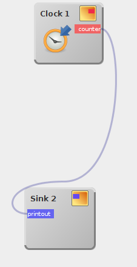
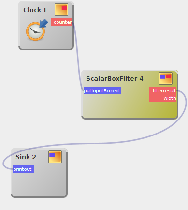

Neue Interaktionsmetapher in dWb+
Da ich - wie ich neulich in einer Kommunikation mit einem geschätzten Kollegen zum erstenmal explizit realisierte - dWb+ schon länger pflege als es die Herstellerfirma anderer Produkte überhaupt gibt, bin ich dennoch nicht zu stolz, neue Ideen einfließen zu lassen...
 Wie bereits
in früheren Artikeln
dargelegt interessiere ich mich durchaus für andere Systeme zur Datenflussprogrammierung und
deren Interaktionsmetaphern. Nun ist es in kurzer Zeit bereits zum zweiten Mal dazu gekommen,
dass ich eine solche in
dWb+
integriert habe:
Wie bereits
in früheren Artikeln
dargelegt interessiere ich mich durchaus für andere Systeme zur Datenflussprogrammierung und
deren Interaktionsmetaphern. Nun ist es in kurzer Zeit bereits zum zweiten Mal dazu gekommen,
dass ich eine solche in
dWb+
integriert habe:
Das Werkzeug Node-RED unterscheidet sich von dWb+ ziemlich deutlich in seinem Konzept der Module oder "Nodes" im Graphen: Solche Nodes haben sehr oft exakt einen Eingang und einen Ausgang. Das macht es intuitiv zugänglich, dass wenn man ein neues Modul über einer bestehenden Verbindung trennt, dieses in diese Verbindung eingeschaltet wird. Damit wird aus zwei Modulen A und B und einer Verbindung A<->B durch Fallenlassen eines Modules C auf ebendieser Verbindung frei Module A, B und C und zwei Verbindungen: A<->C und c<->B.
Diese Idee hat mir so gut gefallen, dass ich sie unter den Randbedingungen in dWb+ umgesetzt habe: Wird ein Modul auf einer Verbindung fallengelassen, werden zunächst die Typen der Verbindungsendpunkte bestimmt. Danach werden die Ein- und Ausgänge des neuen Modules daraufhin überprüft, ob es welche gibt, die damit kompatibel wären. Gibt es mehrere, wird untersucht, ob einer davon ein autoconnect-Slot ist. In diesem Fall ist dieser der Gewinner. Existiert bei mehreren kompatiblen Slots darunter kein Autoconnect–Kandidat, gibt es ebenso keinen Gewinner, wie wenn keiner kompatibel ist. Existiert exakt ein kompatibler Slot, ist natürlich dieser der Gewinner.
Existieren auf beiden Seiten Gewinner, wird die alte Verbindung entfernt und durch zwei neue ersetzt. Die Bilder hier zeigen einen vorher-nachher-Vergleich:

Zwei Module durch eine Verbindung verknüpft

Nach "Fallenlassen" eines passenden Modules wird dieses in die Verbindung eingebautTags


Neueste Artikel
-
 Streaming Server mit Linux
Streaming Server mit Linux
Ich habe schon länger darüber nachgedacht, einmal zu versuchen, einen Streaming-Server aufzubauen. Da es in letzter Zeit wieder einmal sehr war draußen ist, habe ich die Zeit, die ich vor der Hitze Schutz suchte dazu genutzt, diese Idee in die Praxis umzusetzen...
Weiterlesen... -
Julia-Mengen mit Shadern umgesetzt
Nachdem ich begonnen hatte, mich anlässlich der neu erwachten Leidenschaft für das Mandelbrot-Fraktal mit Shaderprogrammierung zu befassen, habe ich ein weiteres verwandtes System in Angriff genommen:
Weiterlesen... -
Migration von KanBoard nach GitLab
Auf Arbeit kam letztens das Thema auf, in der Infrastruktur ein wenig aufzuräumen. Teil der Diskussion war auch, das von Teilen der Administration liebgewonnene KanBoard durch GitLab zu ersetzen, wobei natürlich die Inhalte in das neue Gitlab-Projekt hinüberwandern sollten.
Weiterlesen...
Manche nennen es Blog, manche Web-Seite - ich schreibe hier hin und wieder über meine Erlebnisse, Rückschläge und Erleuchtungen bei meinen Hobbies.
Wer daran teilhaben und eventuell sogar davon profitieren möchte, muß damit leben, daß ich hin und wieder kleine Ausflüge in Bereiche mache, die nichts mit IT, Administration oder Softwareentwicklung zu tun haben.
Ich wünsche allen Lesern viel Spaß und hin und wieder einen kleinen AHA!-Effekt...
PS: Meine öffentlichen GitHub-Repositories findet man hier.